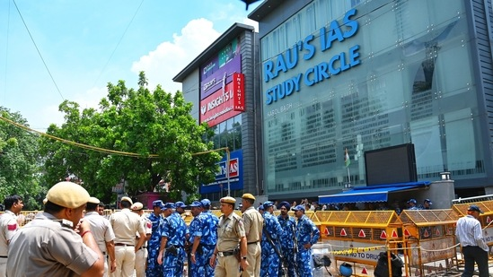
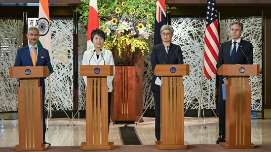

Latest News
ANALYSIS :
Eye on the Middle East | Between Israel, Palestine, and the US – three divergent views on conflict resolution.
WORLD NEWS:
Cardi B rips into Donald Trump over his ‘terrifying’ promise to Christians: ‘Whistle blowing a…'
WORLD NEWS :
Quad's call for ‘free and open Indo-Pacific’ irks China
OLYMPICS :
Paris Olympics 2024 Day 3 Live Updates: Manika Batra up next for India
Trending
Visitors at Dubai Mall witness rare sight of baby shark's birth inside aquarium
olympics Paris Olympics 2024 Live Updates: Ashwini holds back tears; Panghal bows out Updated 3 mins ago
Nirmala Sitharaman to Oppn on Budget bias charge: ‘26 states not named in 2009…’
Meta agrees to $1.4 billion settlement with Texas in facial recognition lawsuit
Real Estate
Sebi bans Omaxe, its chairman, MD others from securities mkt for two years - Sebi on July 30 barred real estate firm Omaxe, its chairman Rohtas Goel, managing director Mohit Goel and three others from the securities market for 2 years
Macrotech Developers reports PAT of ₹480 crore, pre sales at ₹4,300 crore in Q1 FY25, adds three projectsMacrotech Developers said the changes proposed in Budget 2024 with regard to long-term capital gains (LTCG) may lead to short term disruption in secondary sales
Top News
Centre forms panel to probe Rau's IAS coaching deaths
 The Ministry of Home Affairs on Monday constituted a committee to inquire into the deaths of 3 civil services aspirants at a coaching centre in old Rajinder Nagar in New Delhi. The committee will inquire into the reasons, fix responsibility, suggest measures and recommend policy changes, the MHA spokesperson posted on X. “The committee will have Additional Secretary, MoUHA, Principal Secretary (Home), Delhi Govt, Special CP, Delhi Police, Fire Advisor and JS, MHA as Convener. It will submit its report in 30 days,” the ministry added.
Centre forms panel to probe Rau's IAS coaching deaths
 Quad, the grouping of India, the US, Japan and Australia reaffirmed its “steadfast commitment” to a free and open Indo-Pacific. It vowed to work towards a region where no country dominates another and every country is free from "coercion". After a meeting of the foreign ministers of the member countries on Monday, the alliance, which was formed to challenge China's growing assertiveness in the Indo-Pacific region, decided to expand its ambitious Indo-Pacific Maritime Domain Awareness (IPMDA) programme to the Indian Ocean region that would facilitate monitoring strategic waters. Meanwhile, China accused the Quad countries of "scaremongering, inciting antagonism and confrontation".
Gautam Gambhir, BCCI left with critical 'sixth coach' decision as Morne Morkel set to join Team India next month: Report
In Sri Lanka, Sairaj Bahutule is currently part of the Indian team management as a bowling coach, a decision taken with regard to spin-friendly surfaces in the country. It is unclear whether Bahutule will stay with the side following Morkel's potential arrival; the South African doesn't hold particular expertise in spin-bowling assistance. With five of India's Tests in the ongoing World Test Championship cycle to take place in home conditions, it will be interesting to see whether the team management would stick with Bahutule or transition to the star former South African pacer.
Hot Topics
Photos: Bullet that whizzed past Donald Trump caught on camera ~By media
Republican candidate Donald Trump, with blood on his face, was surrounded by Secret Service agents as he was escorted offstage during a campaign event at Butler Farm Show Inc.Sports :
‘Manu Bhaker was disappointed for missing gold. One wrong shot…’: Father after daughter's historic double Olympic bronze
By~
HT Sports Desk

The first Indian woman shooter to win an Olympic medal, ending a 12-year wait for the shooting contingent, barely smiled and waved at the few chanting her name on Sunday at the shooting arena in Chateauroux, France. 48 hours later,
India rejoices as Manu Bhaker wins second bronze at Paris Olympics
Manu Bhaker won another bronze for India at the Paris Olympics, along with Sarabjot Singh, as the shooting pair won bronze in the 10m mixed team air pistol event on Tuesday, July 30. As India clinched its second medal at the international multi-sport event.